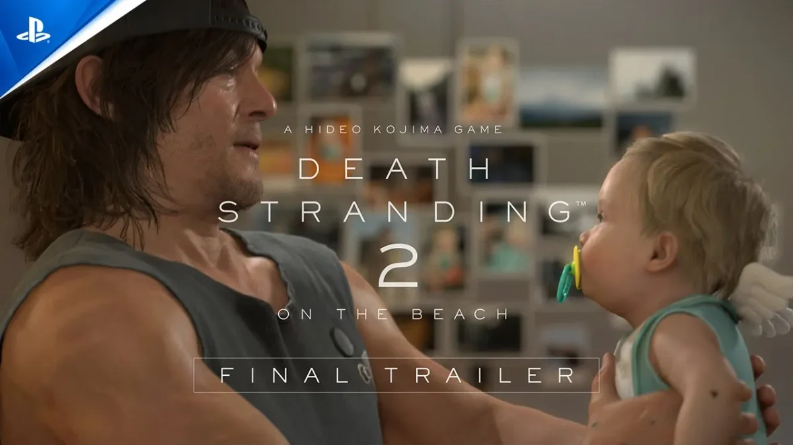

IN THE SPOTLIGHTDeath Stranding 2 leads November’s PlayStation Plus lineup
Sam’s next journey joins the Game Catalog alongside Atomfall, Dragon Quest III HD-2D Remake and more.
PlayStation.BlogRead story
Opens in a new tab.